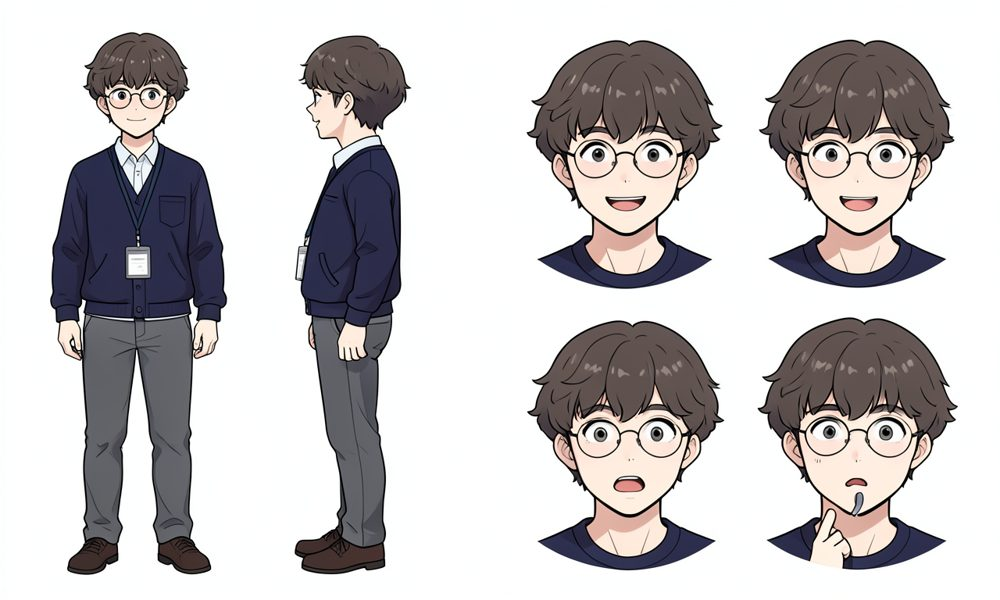
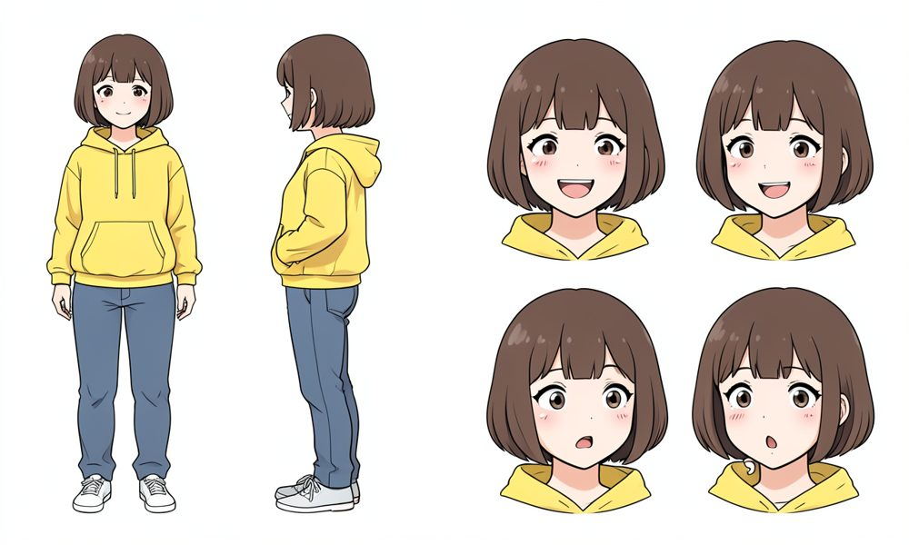
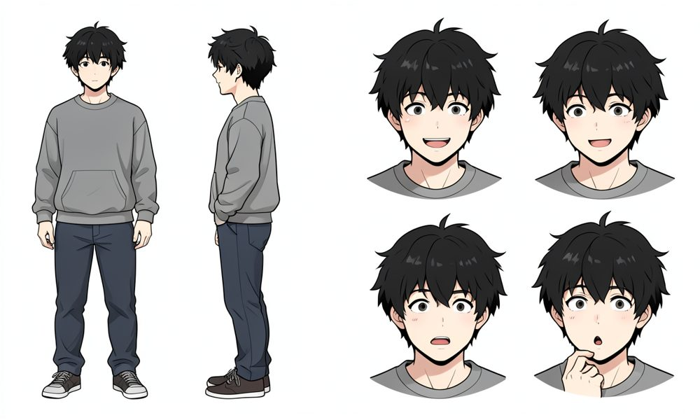
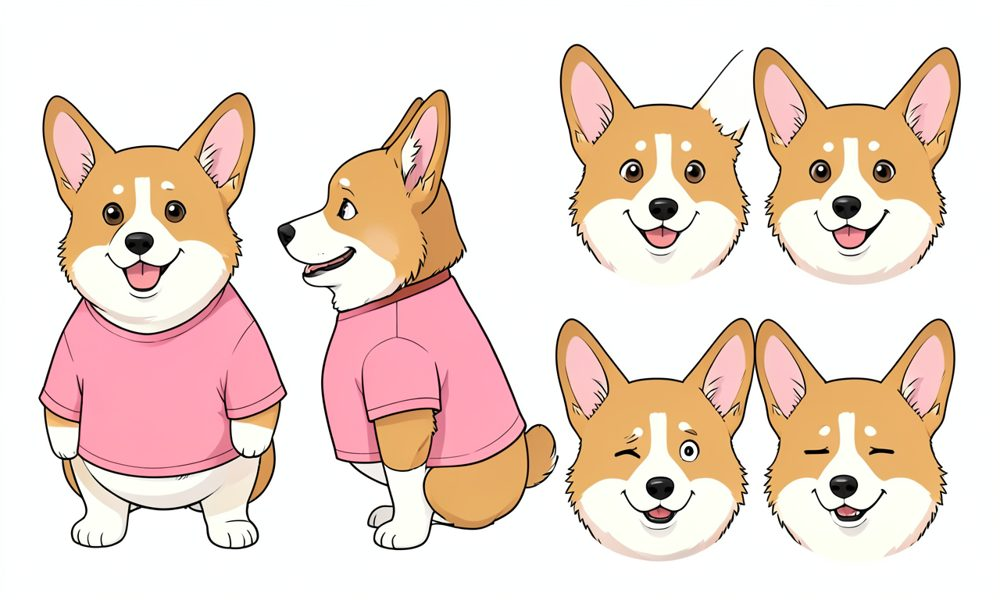

메인퀘스트 2 · 학교 과제용 시범 웹툰
퍼실 선생님의 PoC 교실
30컷 · 대본, 그림, 머리 탐지, 말풍선 배치까지 전부 내 컴퓨터에서 만들었습니다
이 웹툰 뒤의 PoC: 말풍선용 얼굴 좌표를 로컬 탐지 모델로 검산하기
말풍선 배치 스크립트는 얼굴 좌표(faces.yaml)를 보고 얼굴을 피합니다. 지금은 AI 오케스트레이션의 에이전트들이 그림을 보고 이 좌표를 적습니다. 내 컴퓨터에서 도는 만화 머리 탐지 모델로 그 좌표를 대체할 수 있는지, 아니면 검산할 수 있는지 확인했습니다.
코드·문제 정의·수치: GitHub 저장소
실제 원고로 잰 결과
측정은 실제 연재 원고 한 편(63컷, 오케스트레이션이 적은 얼굴 78개)으로 했습니다. 원고 그림은 공개하지 않고 수치만 싣습니다. 같은 과정을 아래 샘플 웹툰으로 직접 보고 재현할 수 있습니다.
교차 검증은 두 경우에 컷을 표시합니다. A 오케스트레이션이 적은 얼굴을 모델이 못 찾음(임계값 0.1). B 모델이 높은 점수(0.5 이상)로 찾은 머리가 오케스트레이션 좌표에 없음.
| 컷 | 표시 이유 | 실제로는 | 누구의 실수 |
|---|---|---|---|
| 09a | A + B | 오케스트레이션 박스가 얼굴 옆 머리카락 위로 어긋남 | 오케스트레이션 ✅ 잡아냄 |
| 33 | B | 배경에 고개를 내민 강아지가 좌표에 없음 | 오케스트레이션이 빠뜨림 |
| 35b, 37 | B | 배경 군중 | 엑스트라 (피해도 되고 안 피해도 됨) |
| 09c | A | 화염 속 괴물 얼굴 | 모델이 놓침 |
| E1 | A + B | 한 명은 뒤돌아 있고, 한 명은 작음 | 모델이 놓침 |
| 17 | B | 젓가락 든 손을 머리로 착각 | 모델의 헛경보 |
| 01 | B | 가로등의 작은 점 | 모델의 헛경보 |
→ 판단: 오케스트레이션은 그대로 두고, 로컬 머리 모델을 검산 단계로 붙인다. 언어 모델은 그림을 보고 좌표를 추정하고 탐지 모델은 박스를 직접 재기 때문에, 틀리는 방식이 달라 서로의 실수를 잡기 좋습니다.
위 웹툰은 이렇게 만들었습니다
원고 대신, 이 과제의 수업 내용을 가상의 학생 둘(하나, 준)과 퍼실이 이야기하는 30컷 웹툰을 새로 만들었습니다. 대본부터 조립까지 전부 내 컴퓨터에서 돌았고, 저장소의 run_samples.sh 하나로 다시 돌릴 수 있습니다.
Claude Code 가 씀→ 캐릭터 시트 4장
FLUX.2 klein 4B→ 컷 30장
시트를 참고 그림으로→ 머리 탐지
30컷 3.2초→ 이름 붙이기
대본의 인물 순서→ 말풍선 배치
얼굴을 피해서→ 세로 웹툰 조립
캐릭터 시트
캐릭터마다 후보 3장을 뽑아 작가가 골랐습니다. 컷을 그릴 때 그 컷에 나오는 인물의 시트를 참고 그림으로 넣어 얼굴과 옷을 유지했습니다.




30컷 머리 탐지 결과
대본에 나오는 인물 30명을 모두 찾아 이름을 붙였습니다. 이름 없는 엑스트라 머리는 60개였는데, 그중 18개는 28컷 노트북 화면 속 만화 그림입니다.
샘플 웹툰은 FLUX.2 klein 4B (Apache 2.0)와 mflux (MIT)로 로컬에서 생성했습니다. 등장인물은 모두 가상입니다.